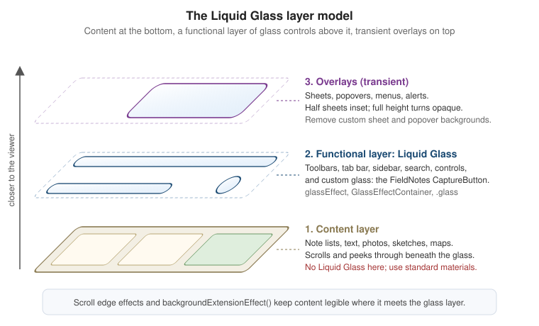

Liquid Glass, Materials and Icons
|
This content was generated with the assistance of AI and should be verified against the official documentation before being relied on in production. |
The 26 releases gave every Apple platform a new visual language built around Liquid Glass, a material that bends and reflects the content behind it, and the 27 releases refine it. This page explains the design model behind it (content at the bottom, a functional layer of glass controls above it) and then the code: what you get for free by rebuilding, which custom styling to remove, how to put glass on your own controls in SwiftUI, UIKit and AppKit, how the accessibility settings change what people see, and how to build the layered app icon that goes with the new look. Everything is written against iOS, iPadOS, macOS, watchOS and visionOS 27, built with Xcode 27 and Swift 6.4, with FieldNotes keeping a deployment minimum of 26. Liquid Glass APIs date from the 26 SDK, so most examples need no availability check; the few things that exist only on the 27 releases, such as the new icon rendering, are called out as "new in 27".
The examples extend FieldNotes: the ContentView split view, NoteList, NoteDetail and, above all, the
floating CaptureButton that page 1 introduced on Getting Started with Apple
Platforms. Toolbars, tab bars and sheets themselves are covered on
Navigation and Presentation; the broader design
principles are on Human Interface Guidelines in Practice.
What Liquid Glass Is
Liquid Glass is a dynamic material. Unlike the blur-based materials of earlier releases, which simply frosted whatever was behind them, it combines several optical effects that update continuously:
-
Lensing. It bends and concentrates the light of the content behind it, so the edges of a glass capsule refract the list scrolling beneath, instead of just blurring it.
-
Reflection and highlights. It picks up color and light from surrounding content and responds to device motion with specular highlights.
-
Adaptivity. It switches between a lighter and darker appearance depending on what is behind it, so that symbols and text on top of it stay legible, and small elements such as a toolbar button adapt more strongly than large ones such as a sidebar.
-
Fluidity. Interactive glass reacts to touch and pointer input (it gently scales and glows under the finger), and nearby glass shapes can merge and split apart, morphing into one another as the interface changes, for example when a button expands into a menu.
The material comes in two variants. Regular glass blurs and adjusts the luminosity of the background to keep foreground content legible; it is what almost every system component uses. Clear glass is more transparent and is meant only for elements that sit over visually rich content such as photos or video, usually with a dimming layer behind them when the content is bright. People can also choose a preferred look for Liquid Glass in their device settings (a clearer or a more tinted appearance), and standard components follow that preference automatically.
The Content Layer and the Functional Layer
The single most important rule of the new design is about where glass goes. Apple’s interfaces are now organized in layers:
-
The content layer: what people came for. In FieldNotes, the note list, the text of a note, attached photos, sketches and maps. It fills the screen edge to edge and scrolls under the controls.
-
The functional layer: controls and navigation that act on the content, such as toolbars, the tab bar, the sidebar, search fields and floating buttons like
CaptureButton. This is where Liquid Glass lives. It floats above the content and lets it peek through, which keeps people oriented without hiding what they are working on. -
Overlays: transient interfaces on top of both, such as sheets, popovers, menus and alerts. They also use glass, provided by the system.
The Human Interface Guidelines put the consequence bluntly: don’t use Liquid Glass in the content layer. A
glass note card or a glass list row competes with the controls for attention, blurs the distinction between
"things to read" and "things to tap", and makes the hierarchy confusing. For visual separation inside the
content layer (a caption over a photo, a grouped panel), use the standard materials instead: SwiftUI’s
Material (.ultraThinMaterial, .thinMaterial, .regularMaterial, .thickMaterial) on iOS and iPadOS, and
the equivalent visual-effect materials in UIKit and AppKit.
Figure: The Liquid Glass Layers

NoteDetail shows an attached photo with its caption. The caption belongs to the content, so it gets a standard
material, not glass:
struct PhotoAttachmentView: View {
let image: Image
let caption: String
var body: some View {
image
.resizable()
.scaledToFill()
.frame(height: 240)
.clipShape(.rect(cornerRadius: 16))
.overlay(alignment: .bottomLeading) {
Text(caption)
.font(.footnote)
.padding(.horizontal, 10).padding(.vertical, 6)
// Content layer: a standard material, not Liquid Glass.
.background(.thinMaterial, in: .capsule)
.padding(10)
}
}
}There is one sanctioned exception: a control inside the content layer that has a transient interactive element, such as a slider’s knob or a toggle’s thumb, turns into glass while you interact with it. Standard controls do that on their own.
What You Get Automatically
If an app uses standard components from SwiftUI, UIKit or AppKit, rebuilding it with the current SDK is most of the adoption work. Bars, sheets, popovers, menus, sidebars, tab bars, search fields and controls pick up Liquid Glass by themselves, and the system adapts them to overlap and focus. Several layout-level changes come along:
-
Controls have rounder shapes that are concentric with the device’s corners, and a new extra-large size.
-
Tab bars float above the content and can minimize while scrolling (
tabBarMinimizeBehavior(_:)); a tab view can adapt into a sidebar on iPad and Mac. -
Sheets have a larger corner radius; half-height sheets are inset from the screen edges, and a sheet that expands to full height becomes more opaque. Action sheets originate from the control that triggered them.
-
Lists, tables and forms use more padding and title-style section headers instead of all-caps ones.
-
Toolbars group their items onto shared glass backgrounds.
In FieldNotes, ContentView's NavigationSplitView, the note list, the toolbar and the settings form needed
no code at all to look right.
Remove Custom Bar Backgrounds
What does need attention is custom styling that was added to make bars look a certain way. A custom background on a navigation bar, a toolbar, a tab bar or a split view column sits on top of, or instead of, the glass and the scroll edge effect, and it usually looks wrong: an opaque stripe where the content should peek through. Apple’s guidance is to remove those customizations and let the system choose the background. This was the pre-26 FieldNotes note list:
// Before: forced an opaque, branded bar background.
NoteList()
.toolbarBackground(Color("BrandPaper"), for: .navigationBar)
.toolbarBackground(.visible, for: .navigationBar)
.toolbarColorScheme(.light, for: .navigationBar)See Apple Developer Documentation -- toolbarBackgroundVisibility(_:for:) for the modifiers this code used to force a visible bar background.
and this is the current version, which simply deletes the three modifiers. Brand color moves to where it helps without fighting the glass: the tint of controls, and the content itself.
// After: the system provides Liquid Glass and the scroll edge effect.
NoteList()
.tint(Color("BrandInk"))The same applies to UIKit code that configures bar appearances with an opaque background, and to popovers and
sheets whose content view adds its own UIVisualEffectView: remove them.
// Before (UIKit): an opaque navigation bar appearance, applied app-wide.
let appearance = UINavigationBarAppearance()
appearance.configureWithOpaqueBackground()
appearance.backgroundColor = UIColor(named: "BrandPaper")
UINavigationBar.appearance().standardAppearance = appearance
UINavigationBar.appearance().scrollEdgeAppearance = appearance
// After: delete the appearance customization entirely and keep only what is still meaningful.
UINavigationBar.appearance().tintColor = UIColor(named: "BrandInk")No More Opting Out: UIDesignRequiresCompatibility
The 26 SDK offered a temporary escape hatch: setting the UIDesignRequiresCompatibility Info.plist key to YES
made an app built with the new SDK keep its pre-26 appearance while the team redesigned. That escape hatch is
gone for apps built against the 27 SDKs: the documentation states that the system ignores the key when you
build for iOS 27, iPadOS 27, Mac Catalyst 27, macOS 27 or tvOS 27 and later. An app still carrying it should
delete the entry and finish its adoption:
<!-- FieldNotes/Info.plist: remove this; it has no effect with the 27 SDK. -->
<key>UIDesignRequiresCompatibility</key>
<true/>Toolbar Grouping
Because toolbar items now share glass backgrounds, the grouping of items is a design decision. Items in the
same ToolbarItemGroup share one capsule; ToolbarSpacer separates groups; and
sharedBackgroundVisibility(.hidden) takes an item (such as an avatar image) out of the shared background. Don’t
mix text and icons within one group, and give every icon an accessibility label:
.toolbar {
ToolbarItemGroup(placement: .primaryAction) {
Button("Share", systemImage: "square.and.arrow.up") { share(note) }
Button("Pin", systemImage: note.isPinned ? "pin.slash" : "pin") { store.togglePin(note) }
}
ToolbarSpacer(.fixed, placement: .primaryAction)
ToolbarItem(placement: .primaryAction) {
Menu("More", systemImage: "ellipsis") { NoteActionsMenu(note: note) }
}
}See Apple Developer Documentation — ToolbarSpacer
and Apple Developer Documentation -- sharedBackgroundVisibility(_:).
Overflow menus, visibilityPriority and the other toolbar additions of the 27 releases are on
Navigation and Presentation.
Custom Glass in SwiftUI
Custom Liquid Glass is for the few custom functional elements an app has; Apple’s guidance is to use it
sparingly, on the most important controls, because every extra glass shape competes with the content. In
FieldNotes there is exactly one: the floating CaptureButton that creates a new note.
glassEffect(_:in:) and the Glass Configuration
glassEffect(_:in:) renders Liquid Glass behind a view’s content, clipped to a shape. The first parameter is a
Glass value and the second any Shape; the defaults are .regular glass in a capsule. A Glass value is
configured with modifiers:
| Configuration | Effect |
|---|---|
|
The standard variant, for almost everything. |
|
The more transparent variant, only over media-rich backgrounds. |
|
No glass at all, as if the modifier were not applied. Useful for switching the effect off without changing the view’s structure (and therefore its identity and animations). |
|
Tints the glass to suggest prominence, for example for a primary action. |
|
Makes the glass react to touch and pointer input, with the same scaling and highlight that glass buttons get. |
Here is the complete CaptureButton. It uses interactive, tinted glass in a circle, and applies glassEffect
after the other modifiers that affect the view’s appearance, because the modifier captures the content as it
is at that point:
// Packages/FieldNotesUI/Sources/FieldNotesUI/CaptureButton.swift
import SwiftUI
public struct CaptureButton: View {
let action: () -> Void
public init(action: @escaping () -> Void) {
self.action = action
}
public var body: some View {
Button("New Note", systemImage: "square.and.pencil", action: action)
.labelStyle(.iconOnly)
.font(.title2)
.foregroundStyle(.white)
.frame(width: 56, height: 56)
#if os(visionOS)
.glassBackgroundEffect(in: .circle) // glassEffect(_:in:) is not available on visionOS
#else
.glassEffect(.regular.tint(.accentColor).interactive(), in: .circle)
#endif
.accessibilityHint("Creates a note in the current notebook")
}
}See Apple Developer Documentation -- glassEffect(_:in:), Apple Developer Documentation — Glass and Apple Developer Documentation — Applying Liquid Glass to custom views.
glassEffect(_:in:) is available on iOS, iPadOS, Mac Catalyst, macOS, tvOS and watchOS 26 and later, but not
on visionOS, where windows already sit on the system’s own glass material and custom elements use
glassBackgroundEffect(). A multiplatform target like FieldNotes therefore branches on the platform (the
#if mechanics are explained in Attributes
and Compiler Control):
extension View {
/// FieldNotes' floating-control style on every platform the app target supports.
@ViewBuilder
func fieldNotesFloatingGlass() -> some View {
#if os(visionOS)
self.glassBackgroundEffect(in: .circle)
#else
self.glassEffect(.regular.tint(.accentColor).interactive(), in: .circle)
#endif
}
}GlassEffectContainer and Morphing with glassEffectID
Glass shapes that are close to each other should be rendered together. GlassEffectContainer(spacing:content:)
does that: every glassEffect inside it is rendered in one pass (which Apple recommends for performance), and
shapes that come within the container’s spacing of each other blend into one continuous piece of glass. When
views appear or disappear inside an animation, glass shapes that carry an identity from glassEffectID(_:in:)
morph: the glass flows out of one shape into the other instead of cross-fading, the same idea as
matchedGeometryEffect on Drawing, Animation and
Gestures.
In FieldNotes a long press on the capture button expands it into three capture modes, which flow out of the main button:
enum CaptureMode: String, CaseIterable, Identifiable {
case text, photo, voice, sketch
var id: Self { self }
var symbolName: String {
switch self {
case .text: "square.and.pencil"
case .photo: "camera"
case .voice: "waveform"
case .sketch: "scribble.variable"
}
}
}
// GlassEffectContainer, glassEffect and glassEffectID are not available on visionOS,
// so the expanding menu is compiled for the other platforms; visionOS keeps the single CaptureButton.
#if !os(visionOS)
struct CaptureMenu: View {
var capture: (CaptureMode) -> Void
@State private var isExpanded = false
@Namespace private var glassNamespace
var body: some View {
GlassEffectContainer(spacing: 24) {
VStack(spacing: 12) {
if isExpanded {
ForEach([CaptureMode.photo, .voice, .sketch]) { mode in
Button(mode.rawValue.capitalized, systemImage: mode.symbolName) {
capture(mode)
withAnimation(.bouncy) { isExpanded = false }
}
.labelStyle(.iconOnly)
.frame(width: 48, height: 48)
.glassEffect(.regular.interactive(), in: .circle)
.glassEffectID(mode, in: glassNamespace)
}
}
Button("New Note", systemImage: CaptureMode.text.symbolName) { capture(.text) }
.labelStyle(.iconOnly)
.font(.title2)
.frame(width: 56, height: 56)
.glassEffect(.regular.tint(.accentColor).interactive(), in: .circle)
.glassEffectID(CaptureMode.text, in: glassNamespace)
.onLongPressGesture {
withAnimation(.bouncy) { isExpanded.toggle() }
}
}
}
}
}
#endifSee Apple Developer Documentation — GlassEffectContainer and Apple Developer Documentation -- glassEffectID(_:in:).
The spacing matters in two ways. A container spacing larger than the stack’s spacing makes the shapes blend together even at rest, because they are "too close"; a smaller one keeps them separate at rest and only lets them merge as they animate toward each other. Tune it until the resting state looks like distinct buttons and the transition looks like one drop of glass splitting apart.
glassEffectUnion and glassEffectTransition
Two more modifiers complete the toolkit. glassEffectUnion(id:namespace:) makes several views contribute to
one glass shape even at rest, which is handy when views are created dynamically or are not in the same stack.
FieldNotes' formatting bar in NoteEditor joins bold, italic and underline into one capsule and the list
buttons into another:
struct FormattingBar: View {
@Namespace private var bar
var body: some View {
GlassEffectContainer(spacing: 8) {
HStack(spacing: 8) {
ForEach(["bold", "italic", "underline"], id: \.self) { symbol in
Button(symbol.capitalized, systemImage: symbol) { applyStyle(symbol) }
.labelStyle(.iconOnly)
.padding(10)
.glassEffect()
.glassEffectUnion(id: "text-style", namespace: bar)
}
ForEach(["list.bullet", "checklist"], id: \.self) { symbol in
Button(symbol, systemImage: symbol) { applyList(symbol) }
.labelStyle(.iconOnly)
.padding(10)
.glassEffect()
.glassEffectUnion(id: "lists", namespace: bar)
}
}
}
}
}glassEffectTransition(_:) picks how a glass shape appears or disappears inside a container. The default,
.matchedGeometry, morphs shapes that are within the container’s spacing; .materialize makes a shape that is
farther away condense out of (or dissolve into) the background, and .identity disables the transition. The
formatting bar appears with .materialize when the keyboard comes up, because it has no nearby glass to morph
from:
if isEditing {
FormattingBar()
.glassEffectTransition(.materialize)
}Concentric Shapes
The new design derives corner radii from the hardware: a sheet’s corners are concentric with the display’s, and
a button inside the sheet is concentric with the sheet. ConcentricRectangle is a shape whose corner radius is
computed from its container shape minus the distance to it, and containerShape(_:) declares that container.
FieldNotes' note preview card uses it so that its inner "open" button always nests neatly in the card’s corner:
struct NotePreviewCard: View {
let note: Note
var open: () -> Void
var body: some View {
VStack(alignment: .leading) {
Text(note.title).font(.headline)
Text(note.body).lineLimit(4)
Button("Open", action: open)
.frame(maxWidth: .infinity)
.padding(.vertical, 10)
.background(.tint.opacity(0.15), in: ConcentricRectangle())
}
.padding(12)
.background(.background.secondary, in: .rect(cornerRadius: 24))
.containerShape(.rect(cornerRadius: 24))
}
}Glass Button Styles
Most of the time, a glass button does not need glassEffect at all. The button styles .glass and
.glassProminent give a Button the standard Liquid Glass look, including the interactive response, and adapt
it to context (for example inside a toolbar); .glass(_:) takes a Glass value for the clear variant or a
tint. FieldNotes uses them on the onboarding screen and on the empty state of a notebook:
struct EmptyNotebookView: View {
var createNote: () -> Void
var importNotes: () -> Void
var body: some View {
ContentUnavailableView {
Label("No Notes Yet", systemImage: "note.text")
} actions: {
Button("New Note", action: createNote)
.buttonStyle(.glassProminent)
Button("Import…", action: importNotes)
.buttonStyle(.glass)
}
}
}
struct PhotoOverlayControls: View {
var retake: () -> Void
var body: some View {
// Over a full-screen photo: clear glass is appropriate here.
Button("Retake", systemImage: "arrow.counterclockwise", action: retake)
.buttonStyle(.glass(.clear))
}
}See Apple Developer Documentation — glass, Apple Developer Documentation — glassProminent and Apple Developer Documentation -- glass(_:). The other button styles and controls are on Controls, Forms, Text, Images and SF Symbols.
Scroll Edge Effects and Background Extension
Content that scrolls under glass needs help to keep the controls on top legible. The scroll edge effect
does that: where a scroll view meets a bar, it progressively blurs and fades the content. System bars apply it
automatically. The style can be adjusted per edge with scrollEdgeEffectStyle(_:for:): .soft (the default on
iOS, a gentle gradient), .hard (a nearly opaque, sharp boundary, typical on macOS and useful above pinned
column headers) and .automatic. scrollEdgeEffectHidden(_:for:) removes it, which is rarely the right call.
A custom bar should register with the same machinery instead of drawing its own background.
safeAreaBar(edge:alignment:spacing:content:) places a view above or below the content like
safeAreaInset, and additionally extends the scroll edge effect under it. The note list has a custom tag filter
bar, TagFilterBar, at the top (its accessibility is covered on
Accessibility). NoteList(notebookID:selection:) filters by notebook only, so
NoteListScreen lists the notes that carry every selected tag itself, reusing NoteRow for each row:
struct NoteListScreen: View {
@Environment(NoteStore.self) private var store
@State private var selectedTags: Set<String> = []
@State private var selectedNote: Note.ID?
private var allTags: [String] {
Array(Set(store.notes.flatMap(\.tags))).sorted()
}
private var filteredNotes: [Note] {
store.notes.filter { selectedTags.isSubset(of: $0.tags) }
}
var body: some View {
List(filteredNotes, selection: $selectedNote) { note in
NoteRow(note: note)
}
.navigationTitle("Notes")
.safeAreaBar(edge: .top) {
TagFilterBar(tags: allTags, selected: $selectedTags, resultCount: filteredNotes.count)
.padding(.vertical, 6)
}
.scrollEdgeEffectStyle(.soft, for: .top)
}
}See Apple Developer Documentation -- scrollEdgeEffectStyle(_:for:), Apple Developer Documentation -- scrollEdgeEffectHidden(_:for:) and Apple Developer Documentation — safeAreaBar(edge:alignment:spacing:content:).
The background extension effect solves a related problem for sidebars and inspectors. In a split view, the
sidebar floats on glass above the detail column; a hero image at the top of the detail would normally stop at the
sidebar’s edge, leaving an empty strip behind the glass. backgroundExtensionEffect() mirrors and blurs the view
into the available safe area around it, so the image appears to continue under the sidebar without its actual
content being hidden there. NoteDetail uses it for the note’s cover photo:
struct NoteDetail: View {
let note: Note
let coverImage: Image?
var body: some View {
ScrollView {
if let coverImage {
coverImage
.resizable()
.scaledToFill()
.frame(height: 280)
.clipped()
.backgroundExtensionEffect()
}
NoteBodyView(note: note)
.padding()
}
.ignoresSafeArea(edges: .top)
}
}Apple’s Landmarks sample is a complete app built around these two effects, with a hero image extending under the sidebar and custom glass badges; it is worth reading side by side with this section.
Liquid Glass in UIKit and AppKit
The same concepts exist in the imperative frameworks, with the same names wherever possible, so a screen that is still UIKit or AppKit can match the SwiftUI screens around it (mixing the frameworks is covered on UIKit and AppKit Essentials, and Mixing Them with SwiftUI).
UIKit
UIKit expresses glass as a new visual effect: UIGlassEffect, set on a UIVisualEffectView just like the
older blur effects. Its style is .regular or .clear, and it has isInteractive and tintColor.
UIGlassContainerEffect plays the role of GlassEffectContainer for several glass views, with a spacing that
controls merging. Buttons get the look through UIButton.Configuration.glass(), .prominentGlass() and
.clearGlass(). UIScrollView exposes its scroll edge effects per edge (topEdgeEffect, bottomEdgeEffect,
and so on) as UIScrollEdgeEffect objects with a style, and UIBackgroundExtensionView is the counterpart of
backgroundExtensionEffect(). The UIKit map screen of FieldNotes places its capture button like this:
import UIKit
final class NoteMapViewController: UIViewController {
private let scrollView = UIScrollView()
override func viewDidLoad() {
super.viewDidLoad()
// A floating glass capture button.
let glass = UIGlassEffect(style: .regular)
glass.isInteractive = true
glass.tintColor = .tintColor
let glassView = UIVisualEffectView(effect: glass)
glassView.frame = CGRect(x: 0, y: 0, width: 56, height: 56)
glassView.layer.cornerRadius = 28 // a circle, like the SwiftUI CaptureButton
var configuration = UIButton.Configuration.plain()
configuration.image = UIImage(systemName: "square.and.pencil")
let captureButton = UIButton(configuration: configuration,
primaryAction: UIAction { [weak self] _ in self?.createNote() })
captureButton.accessibilityLabel = "New Note"
glassView.contentView.addSubview(captureButton)
view.addSubview(glassView)
// A standard glass button needs no effect view at all.
let filterButton = UIButton(configuration: .glass())
filterButton.configuration?.image = UIImage(systemName: "line.3.horizontal.decrease")
view.addSubview(filterButton)
// A sharper edge effect under a custom header pinned to the top of the scroll view.
scrollView.topEdgeEffect.style = .hard
}
private func createNote() { /* ... */ }
}See Apple Developer Documentation — UIGlassEffect, Apple Developer Documentation — UIGlassContainerEffect, Apple Developer Documentation — UIButton.Configuration.glass(), Apple Developer Documentation — UIScrollEdgeEffect and Apple Developer Documentation — UIBackgroundExtensionView.
As in SwiftUI, animate a glass view in by setting its effect inside an animation block (starting from an effect
view with no effect), which lets UIKit materialize the glass instead of fading a finished view; and animate it out
by setting effect back to nil.
AppKit
On the Mac, glass is a view rather than an effect. NSGlassEffectView embeds its contentView in glass, with
cornerRadius, tintColor and a style of .regular or .clear. NSGlassEffectContainerView merges nearby
glass views efficiently, NSButton gets a .glass bezel style, and NSBackgroundExtensionView extends content
under sidebars and inspectors. The AppKit inspector panel of the Mac app shows a floating glass toolbar:
import AppKit
final class SketchInspectorController: NSViewController {
override func loadView() {
let root = NSView()
let penButton = NSButton(image: NSImage(systemSymbolName: "pencil.tip",
accessibilityDescription: "Pen")!,
target: self, action: #selector(selectPen))
penButton.bezelStyle = .glass
let eraserButton = NSButton(image: NSImage(systemSymbolName: "eraser",
accessibilityDescription: "Eraser")!,
target: self, action: #selector(selectEraser))
eraserButton.bezelStyle = .glass
let stack = NSStackView(views: [penButton, eraserButton])
let glass = NSGlassEffectView()
glass.contentView = stack
glass.cornerRadius = 18
let container = NSGlassEffectContainerView()
container.contentView = glass
container.spacing = 12
root.addSubview(container)
view = root
}
@objc private func selectPen() { /* ... */ }
@objc private func selectEraser() { /* ... */ }
}How Accessibility Settings Change the Glass
Translucency and fluid motion are what make Liquid Glass feel alive, and they are also what some people need to
turn down. The system handles this for standard components and for every glassEffect, UIGlassEffect and
NSGlassEffectView: you do not write code to make the glass itself accessible, but you do need to test
with the settings on, and to adapt anything custom that you draw next to the glass.
| Setting | What happens to Liquid Glass |
|---|---|
Reduce Transparency |
The glass becomes frostier and more opaque, obscuring much more of the content behind it. Clear glass gets
the same treatment. Anything you made translucent yourself (a custom |
Increase Contrast |
Glass elements become predominantly black or white with a contrasting border, so their edges stay visible against any content. |
Reduce Motion |
The intensity of some effects decreases and the elastic, "liquid" behavior (the stretching and wobbling of interactive glass, exaggerated morphs) is turned off. |
Preferred Liquid Glass look |
People can choose a clearer or a more tinted look for the material in their settings; standard and custom glass both follow it. |
These behaviors are the ones Apple describes in the Meet Liquid Glass session and the Adopting Liquid Glass
overview. In your own code, read the corresponding environment values for what you draw yourself.
CaptureMenu's morph animation is purely decorative, so with Reduce Motion it switches to a simple cross-fade,
and the custom photo caption becomes opaque with Reduce Transparency:
struct CaptureMenuAccessibilityAdapted: View {
@Environment(\.accessibilityReduceMotion) private var reduceMotion
@Environment(\.accessibilityReduceTransparency) private var reduceTransparency
@Environment(\.colorSchemeContrast) private var contrast
@State private var isExpanded = false
var expandAnimation: Animation {
reduceMotion ? .easeInOut(duration: 0.15) : .bouncy
}
var body: some View {
VStack {
Text("Trail notes")
.padding(8)
.background(reduceTransparency ? AnyShapeStyle(.background)
: AnyShapeStyle(.thinMaterial),
in: .capsule)
.overlay {
if contrast == .increased { Capsule().stroke(.primary, lineWidth: 1) }
}
Button("Capture modes", systemImage: "plus") {
withAnimation(expandAnimation) { isExpanded.toggle() }
}
.buttonStyle(.glass)
}
}
}See Apple Developer Documentation — accessibilityReduceTransparency, Apple Developer Documentation — accessibilityReduceMotion and Apple Developer Documentation — colorSchemeContrast.
UIKit and AppKit expose the same settings as UIAccessibility.isReduceTransparencyEnabled (with a matching
change notification) and NSWorkspace.shared.accessibilityDisplayShouldReduceTransparency:
#if canImport(UIKit)
let captionAlpha: CGFloat = UIAccessibility.isReduceTransparencyEnabled ? 1.0 : 0.75
#elseif canImport(AppKit)
let captionAlpha: CGFloat = NSWorkspace.shared.accessibilityDisplayShouldReduceTransparency ? 1.0 : 0.75
#endifSee Apple Developer Documentation — isReduceTransparencyEnabled and Apple Developer Documentation — accessibilityDisplayShouldReduceTransparency.
The simplest way to test is the Accessibility Inspector’s settings panel and the Simulator’s accessibility overrides in Xcode, which toggle these settings on a running app without leaving Xcode; both are described on Accessibility, together with contrast requirements for text placed on glass.
App Icons with Icon Composer
The new design extends to app icons. Icons are now layered: instead of a single flattened image, an icon is a stack of up to four groups of layers (background to foreground), and the system renders Liquid Glass effects on them (specular highlights, blur, translucency, shadow and, on the 27 releases, refraction), responding to lighting and motion. On iOS, iPadOS and macOS each icon has appearance variants: default (light), dark, clear and tinted, which people choose for their Home Screen. The system applies the mask: a rounded rectangle on iPhone, iPad and Mac, and a circle on Apple Watch.
The tool for building them is Icon Composer, which ships with Xcode (Xcode > Open Developer Tool > Icon Composer) and is also available from Apple Design Resources. It produces one file that represents the icon on iOS, iPadOS, macOS and watchOS, and on the App Store.
The Workflow
-
Design in layers in any vector editor, starting from Apple’s icon template: a 1024 x 1024 canvas for iPhone, iPad and Mac, and 1088 x 1088 for Apple Watch. Use simple, solid, overlapping shapes, convert text to outlines, and name layers with increasing numbers from back to front.
-
Leave effects out: no blurs, shadows, specular highlights, background colors or gradients, and no mask. Icon Composer adds all of these in a way that adapts to each appearance.
-
Export each layer as SVG (or PNG for features SVG cannot express) and drag them, or folders of them, into Icon Composer; folders become groups.
-
Organize into at most four groups, set the background (solid or gradient), and adjust per group the Liquid Glass properties: Individual or Combined mode, specular, blur, translucency, shadow and refraction.
-
Customize variants per platform and per appearance (dark, mono for clear and tinted) where the defaults do not work, and preview them over your own backgrounds.
-
Add the file to the Xcode project and set the target’s App Icon field to its name.
FieldNotes' artwork is exported like this before it is imported:
FieldNotesIcon-layers/
Background/ -> group 1 (Icon Composer adds the gradient fill)
Page/
1-page.svg -> group 2: the folded notebook page
Mark/
2-contour-lines.svg -> group 3: map contour lines, semi-transparent
3-pencil.svg -> group 4: the pencil, foregroundSee Apple Developer Documentation — Creating your app icon using Icon Composer and Human Interface Guidelines — App icons.
In the project, the Icon Composer file replaces the AppIcon set of the asset catalog, and the target’s App
Icon setting must match its name without the extension. That setting is the ASSETCATALOG_COMPILER_APPICON_NAME
build setting, which you can check from the command line (build settings and configuration files are covered on
Membership, Signing, Capabilities and Info.plist):
xcodebuild -project FieldNotes.xcodeproj -target FieldNotes -showBuildSettings \
| grep ASSETCATALOG_COMPILER_APPICON_NAME
# ASSETCATALOG_COMPILER_APPICON_NAME = FieldNotesIconTwo platform details affect FieldNotes. First, because its deployment minimum is 26, Xcode also generates flat icon images at build time for any older releases the target supports, from the same file, so there is no separate legacy icon to maintain. Second, visionOS (and tvOS) targets still use an asset catalog app icon, so the visionOS build of FieldNotes keeps its layered visionOS image stack in the asset catalog alongside the Icon Composer file used by the other platforms.
Refraction and the 27 Icon Rendering (New in 27)
The icons of the 27 releases are rendered more sharply and with more depth. Icon Composer 2.0, included with Xcode 27, adds a new rendering mode for them with refraction (layers pick up and bend the color and shape of what is behind them), an outside specular option and deeper shadows. The group inspector exposes the new properties: turn Refraction on and drag its strength in the 2D control, and choose whether specular highlights sit Inside, Outside or Automatic.
Because FieldNotes also runs on the 26 releases, one icon file must look right in both design generations. Icon Composer’s toolbar lets you switch the preview between them (for example macOS 26 and macOS 27 rendering), and toggling Effects off shows the flat artwork. On versions earlier than 27, refraction settings have no visible effect and inside/outside specular settings just turn highlights on, so do not rely on refraction to carry the design. Once the icon looks good in both generations, the same file serves every OS version the app supports.
Adoption Checklist
Adopting the design in an existing app is an audit more than a rewrite. For FieldNotes, and for any app moving to the 27 SDK:
| Area | Check |
|---|---|
Build |
Build with Xcode 27 and run on the 27 releases. Remove |
Bars and sheets |
Remove custom backgrounds from navigation bars, toolbars, tab bars, split view columns, sheets and popovers. |
Layers |
Glass only on functional elements; standard materials for separation inside content. |
Custom glass |
Few elements, grouped in a |
Custom bars |
Register them with |
Shapes and color |
Use concentric shapes and standard spacing; use color sparingly in controls, with light, dark and increased-contrast variants. |
Accessibility |
Test with Reduce Transparency, Increase Contrast and Reduce Motion, and with both preferred glass looks. |
Performance |
Limit how many glass effects are on screen at once and profile with Instruments (Performance and Instruments). |
App icon |
One Icon Composer file with layered artwork, checked in both the 26 and the 27 design generations. |
For the Figma side of effects such as blur and glass, see Strokes, Effects and Blend Modes.
References
-
Apple Developer Documentation — Applying Liquid Glass to custom views
-
Apple Developer Documentation — Landmarks: Building an app with Liquid Glass
-
Apple Developer Documentation -- toolbarBackgroundVisibility(_:for:)
-
Apple Developer Documentation — UIDesignRequiresCompatibility
-
Apple Developer Documentation -- sharedBackgroundVisibility(_:)
-
Apple Developer Documentation — glassBackgroundEffect(in:displayMode:)
-
Apple Developer Documentation — glassEffectUnion(id:namespace:)
-
Apple Developer Documentation -- scrollEdgeEffectStyle(_:for:)
-
Apple Developer Documentation -- scrollEdgeEffectHidden(_:for:)
-
Apple Developer Documentation — safeAreaBar(edge:alignment:spacing:content:)
-
Apple Developer Documentation — UIButton.Configuration.glass()
-
Apple Developer Documentation — accessibilityReduceTransparency
-
Apple Developer Documentation — accessibilityDisplayShouldReduceTransparency
-
Apple Developer Documentation — Creating your app icon using Icon Composer